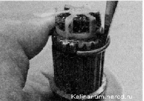

Внутренний шарнир привода сиятие, замена защитного чехла и установкаДля выполнения работы потребуются: — специальные клеши для установки хомутов крепления чехлов ШРУСов или раздвижные пассатижи; — съемник наружных стопорных колец; — смазка для ШРУСов — 80 см ; — новый защитный чехол шарнира; — новые стопорное и упорное кольца шарнира. Снятие 1. Снимаем привод в сборе. 2. Закрепляем привод в сборе в тисках и специальными клещами или раздвижными пассатижами снимаем большой и малый хомуты защитного чехла.
3. Шлицевой отверткой поддеваем и снимаем защитный чехол с корпуса внутреннего шарнира. Поврежденный чехол можно удалить, разрезав его ножом. При выполнении следующей операции. если шарнир будет использоваться повторно, нельзя наносить удары по сепаратору или корпусу шарнира. 4. Закрепляем вал привода в тисках. Нанося удары молотком через выколотку из мягкого металла по внутренней обойме шарнира, сбиваем шарнир с вала привода. 5. Снимаем стопорное и упорное кольца, аналогично тому как это показано на наружном шарнире. 6. Снимаем защитный чехол с вала привода. 7. Промываем шарнир в керосине, вытираем чистой тканью и даем высохнуть. Установка 1. Закрепляем в тисках вал привода в вертикальном положении. 2. Наматываем скотч (или изоляционную ленту) на шлицы вала, надеваем на вал новый защитный чехол, сдвигаем чехол к середине вала и удаляем скотч. На правом приводе выворачиваем чехол наизнанку на вал. Совет Не используйте для установки упорного кольца торцовую головку. Внутренняя фаска, имеющаяся почти на всех головках, сожмет кольцо, что не позволит установить его на вал. 3. Используя рожковый ключ на 24 мм как оправку, устанавливаем на шлицевой конец вала новое упорное кольцо. 4. При помощи шлицевой отвертки устанавливаем на вал новое стопорное кольцо.  5. Наносим на шлицы вала смазку для ШРУСов. 6. Надеваем внутреннюю обойму шарнира на шлицы вала. Выравниваем корпус шарнира с осью вала. Ударами молотка через деревянный брусок напрессовываем шарнир на вал до полной установки стопорного кольца. Для внутреннего шарнира необходимо 80 см^ смазки. 7. Заполняем шарнир смазкой для ШРУСов, а оставшуюся часть смазки (от 80 см ) закладываем в защитный чехол. 8. Надеваем большой уплотнительный пояс защитного чехла на корпус шарнира, а малый уплотнительный пояс чехла устанавливаем в проточку вала. Приподняв малый уплотнительный пояс чехла при помощи тонкой шлицевой отвертки, выпускаем воздух из внутренней полости защитного чехла. 9. При помощи специальных клешей или больших раздвижных пассатижей устанавливаем большой и малый хомуты защитного чехла. Перед установкой собранного привода на автомобиль обязательно поставьте новое стопорное кольцо на шлицевой хвостовик внутреннего шарнира. 10. Устанавливаем привод в сборе на автомобиль. |